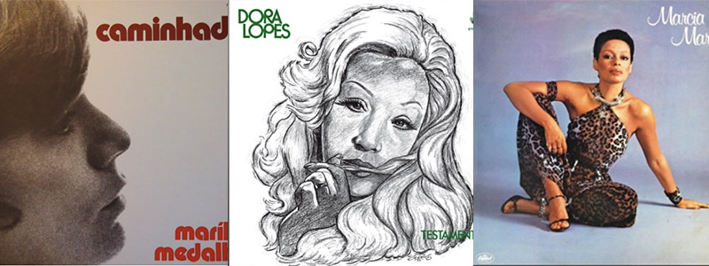

Loading...
1. Harnik
Homage to Jeanne Lee
Poem from "Homage to Jeanne Lee"
My skin growing ears
Forming overlapping scales
Ancient and reptilian
Turning in all directions
External and internal
Sending them out
into the space around me
I listen
Both bound yet free
In 2017 I had the great opportunity to create a symbolic gesture of affinity to Jeanne Lee – a singer, dancer, poet, composer, improviser, educator, and working mother who embraced avant-garde and took a multidisciplinary and intercultural approach to her work, always listening with her entire body for the miracle.
In celebration of the 15th anniversary of the Austrian Cultural Forum New York, director Christine Moser, in collaboration with Austria's oldest contemporary music festival "ORF musikprotokoll im steirischen herbst", presented the sound exhibition Homages. Curated by Christian Scheib and designed by Fränk Zimmer of musikprotokoll, Homages featured 15 pieces by Austrian musicians, each paying tribute to one particular pivotal artist whose work was influenced by New York. The 15 commissions were spread throughout the architectural structure of the ACF New York, inviting visitors to explore all public spaces of the building designed by Raimund Abraham in 1992 and completed in 2002. Aided by sensory receivers and LED light boxes, the sound pieces were installed to be experienced privately through audio devices and headphones. Between each installation, soundscapes from NYC and Graz, Austria were audible. After its run at the ACF NY in 2017, Homages travelled to the Stadtwerke-Haus in Graz, Austria as part of the festival "ORF musikprotokoll im steirischen herbst" which celebrated its 50th year.
More fromElisabeth Harnik
2. Vandermark
Fragments Of 20th Century Thought Regarding Art and Commerce (For Walter Benjamin)
"The artists of our day are becoming businessmen and think the same way as a lawyer." -Erik Satie, 1901 (1)
"The great trouble with art in this country at present, and apparently in France also, is that there is no spirit of revolt- no new ideas appearing among the younger artists. They are following along the paths beaten out by their predecessors, trying to do better what their predecessors have already done. In art there is no such thing as perfection. And a creative lull occurs always when artists of a period are satisfied to pick up a predecessor's work where he dropped it and attempt to continue what he was doing." -Marcel Duchamp 1946 (2)
"It is not that there is a new imagination but that there is a new reality." -Wallace Stevens 1951 (3)
"If you copy, it means you're working without any real feeling. No two people on earth are alike, and it's got to be that way in music or it isn't music." -Billie Holiday 1956 (4)
"Sometimes I think the worst thing is the current 'worldliness' of the whole [art] scene. It is the most deceptive, corrupting, transient thing, full of kicks and fun but so little to do with what it's all really about... ...It has to do with our time, a desperate pact about the power of immediate-in-ness. But I feel less and less concerned with this as an issue. So what? No threat." -Helen Frankenthaler 1965 (5)
"What it all boils down to is this. If a man teaches composition in a university, how can he not be a composer? He has worked hard, learned his craft. Ergo, he is a composer. A professional. Like a doctor. But there is that doctor who opens you up, does exactly the right thing, closes you up- and you die. He failed to take the chance that might have saved you. Art is a crucial, dangerous operation we perform on ourselves. Unless we take a chance, we die in art.
It becomes increasingly obvious that to these fellows, music is not an art. It is a process of teaching teachers to teach teachers. In this process it is only natural that the music of the teacher will be no different from that of the teacher he's teaching. Academic freedom seems to be the comfort of knowing one is free to be academic[…]
You can't buck the system, especially if it works. And this system does work. You can put it in a test tube and prove it. You can feed it to a synthesizer and hear Foundations shake. These men are their own audience. They are their own fame. Yet they have created a climate that has brought the musical activity of an entire nation down to a college level." -Morton Feldman 1966 (6)
"It means what it says." -Samuel Beckett 1969 (7)
"I have said that Parker and his associates not only evolved a replenishment of the jazz language, but that they proposed a change in the function of the music. Players undertook the former simply because they could, because they heard the music that way and therefore had to play it that way. There can be no question that they succeeded in permanently replenishing the jazzman's vocabulary and usage. But they undertook to bring about the change in the function of jazz a little more deliberately and a lot more self-consciously, and there remains a question of whether or not they succeeded. There was and is relatively little ballroom or social dancing done to modern jazz, but for a large segment of its audience it is not quite an art music or a concert music. It remains by and large still something of a barroom atmosphere music. And perhaps a failure to establish a new function and milieu for jazz was, more than anything else, the personal tragedy of the members of the bebop generation." -Martin Williams 1970 (8)
"Pierre [Boulez] has the mind of an expert. With that kind of mind you can only deal with the past. You can't be an expert in the unknown. His work is understandable only in relation to the past." -John Cage, 1976 (9)
"For the most basic assumption that dictated my early attempts to respond to creative music commentary was the mistaken belief that western journalists had some fundamental understanding of black creativity- or even western creativity- but this assumption was seriously in error." -Anthony Braxton 1985 (10)
"In this new era, what sets you free is knowledge, not work." -Elfriede Jelinek 1990 (11)
"A contract's a contract ... the trade-off: some Akerman by Akerman, filmmaker of our time, for some money. I always respect my contracts." -Chantal Akerman 1997 (12)
"I believe in a cinema which gives more possibilities and more time to its viewer--a half-fabricated cinema, an unfinished cinema that is completed by the creative spirit of the viewer, [so that] all of a sudden we have a hundred films." -Abbas Kiarostami 1998 (13)
"The revision of any kind of established model is always a political act." -Kerry James Marshall 2016 (14)
Ken Vandermark, Istanbul, November 18, 2018
NOTES:
(1)from "Satie Seen Through His Letters" (Marion Boyars: 1994), compiled by Ornella Volta, translated by Michael Bullock, p. 145.
(2)from "The Writings of Robert Motherwell," (University of California Press: 2007), edited by Dore Ashton with Joan Banach, p. 294-295.
(3)from "The Writings of Robert Motherwell," (University of California Press: 2007), edited by Dore Ashton with Joan Banach, pg. 102.
(4) from “Lady Sings the Blues: The 50th-Anniversay Edition with a Revised Discography", (Broadway Books: 2011), written by Billie Holiday with William Dufty, p. 61
(5) from "Interview with Helen Frankenthaler", by Henry Geldzahler, Artforum International, Vol. 4, No. 2, p. 38
(6)from "Give My Regards to Eighth Street: Collected Writings of Morton Feldman" (Exact Change: 2000), edited by B. H. Friedman, p. 47-48.
(7) from "The Coming of Godot," (Oberon Books: 2005), written by Jonathan Croall, p. 91
(8)from "The Jazz Tradition, Second Revised Edition" (Oxford University Press: 1993), written by Martin Williams, p. 148.
(9)from "Conversing With Cage, Second Edition" (Routledge: 2003), edited by Richard Kostelanetz, p. 212
(10) from "The Tri-axium Writings" written by Anthony Braxton (Synthesis Music: 1984).
(11) from "Wonderful, Wonderful Times" (Serpent's Tail: 1990), written by Elfriede Jelinek, translated by Michael Hulse, p. 33-34
(12) from the television episode "Chantal Akerman by Chantal Akerman," directed by Chantal Akerman for the French TV series, "Cinéma, do notre Temps," and broadcast in 1997.
(13) from "Fill in the Blanks," by Johnathan Rosenbaum, The Chicago Reader, May 28, 1998.
(14) from "Kerry James Marshall, Boldly Repainting Art History," by Randy Kennedy, The New York Times, Sept. 9, 2016
More fromKen Vandermark
3. Henneman
Photo Series
From the photo album On Tour: Life outside and attributes
Ig Henneman Sextet Europe tour 2010
We were totally stuck in a snowy Amsterdam, missed a concert in Belgium… -Axel Doerner
Duo Baars Henneman Iceland 2013
Time to admire the geysers -Ab Baars
Queen Mab Trio and more collaborations 2016
time to roam in Toronto -Ig Henneman
Harnik Henneman Baars Austria tour 2018
a day off in lovely Gramsch -picture puzzle with Elisabeth Harnik and Ab Baars
viola mutes and watch Austria 2018
preparing for the Kulturforum concert with Elisabeth and Ab in Krumpendorf there is a choice between my mutes but I always end up using my favorite wooden one...
More fromIg Henneman
4. Daisy
Moments of Intersection
As a musician who draws inspiration from the world of painting and sculpture, both as a performer and composer and as someone who aims to translate this influence into my various sound making endeavors, I thought I would offer here a short list of a few of my favorite musical works which were also influenced, to varying degrees, by the visual art world. All of these works listed below were composed by folks who investigated this intersection between the sound and visual disciplines, to varying degrees, and in various contexts throughout their careers.
Each set of works is prefaced by a quote from the composer which makes reference to his or her connection to the visual world.
I hope you enjoy the short list of compositions and also find it as a useful way to explore the intersections between sound and vision.
-Tim Daisy, Evanston, IL November 2018
“If you don’t have a friend who’s a painter, you’re in trouble.”
-Morton Feldman, “Darmstadt Lecture”
Morton Feldman
“For Philip Guston” for flute, percussion, and piano/celesta (1984)
“Triadic Memories” for piano (1981)
“For Franz Kline” for soprano, horn, chimes, piano, violin, and cello (1962)
“Images are……. Musical. The ways they are put together are musical”
-Meredith Monk
Meredith Monk
Key (1971)
“City Songs” (1984) / “Window in 7’s” for Solo Piano (1986)
“We say, when we like a work of art, that it is beautiful; but what we mean is that it’s interesting, because the word ‘beauty’ has no meaning other than we approve of it; the only reason we approve of it is that it keeps our attention. The reason they interest me is that I can look at them for a long, long time and I would never know the end of it; I see something I hadn’t noticed before.”
-John Cage Cologne 1983
John Cage
“Music For Marcel Duchamp” For Prepared Piano (1947)
“Fontana Mix” For Tape (1958)
“Child of Tree” (Improvisation I), for percussion made of plants and/or plants used as percussion (1975)
“Before I start an orchestral work I draw in color – brass is red; woodwinds are blue; percussion is black; strings are green….these are arbitrary associations but useful notations. I sketch out blocks, sections, densities, which might later be translated into more precise and specific configurations.”
-Earle Brown
Earle Brown
Folio and 4 Systems” (1954)
“Available Forms I “ for Chamber Orchestra (1962)
“Calder Piece” four percussionists and Calder mobile 12’-15’
More fromTim Daisy
5. Nilssen-Love
Possible to find, impossible to be without
A music list by Paal Nilssen-Love
I tried to keep the list short... but that was impossible. When I got to 70 titles, I realized 100 would have to be the limit… so, here´s 101albums that have inspired me. Even with a list so long, they´re all amazing! And the diversity of the sounds shows the incredible output one single country within a very short span of time, most of the list containing albums from the mid 60s to mid 70s.
In the list you will find samba, samba-rock, some funk, pop, even disco and some amazing Forró albums. The very first Brazilian artist who blew me away was Luiz Gonzaga. Some 20 years ago. Then 10 years ago I heard Jair Rodrigues for the first time. Shortly after also Elza Soares, Clara Nunes, Elis and more…
I´ve been to Brazil almost twice a year since my first trip in 2013. There´s some incredible, almost forgotten singers and bands. Please check out Dora Lopes whom I discovered a year ago. Marília Medalha, Marcia Maria, Osvaldo Nunes, Tom & Dito, Beto Scala, Wando, Wilson Das Neves and not least Trio Nordestino and Bandanho De Pifano! I know there´s more to discover. It never ends! I´m sorry for any forgotten album, singer, group or artist. There´s more, I know… Also, big thanks to great friend Bernardo Oliveira who´s introduced me to many of the albums listed below
Female Singers
- Odete Lara “ Vinícius de Moraes & Odette Lara” 1963
- Nara Leão “Nara” 1964
- Elis Regina “Samba, Eu Canto Assim” 1965
- Maria Bethânia “Recital Na Boite Barroco” 1968
- Elizeth Cardoso “Elizeth Cardoso & Zimbo Trio & Jacob Do Bandolim” 1968
- Zelia Barbosa “Sertao & Favelas” 1969 (This is also reissued as BRAZIL: Songs of Protest)
- Gal Costa “Gal” 1969
- Claudette Soares “Feitinha Pro Sucesso Ou Quem Não E A Maior Tem Que Ser A Melhor” 1969
- Elza Soares “Sambas E Mais Sambas” 1970
- Doris Monteiro “Doris” 1971
- Claudette Soares “De Tanto Amor” 1971
- Elza Soares “Elza Pede Passagem” 1972
- Gal Costa “India” 1973
- Marília Medalha “Caminhada” 1973
- Clementina de Jesus "Marinheiro só" 1973
- Marisa “Viagem” 1973
- Eva “Eva” 1974
- Dora Lopes “Testamento” 1974
- Simone “Quatro Paredes” 1974
- Beth Carvalho “Pandeiro E Viola” 1975
- Joyce “Passarinho Urbano” 1976
- Marcia Maria “Marcia Maria” 1978
- Catia de França “20 Palavras Ao Redor do Sol” 1979
- Dona Ivone Lara “Sorriso De Criança” 1979
- Clara Nunes “Esperança” 1979
- Clara Nunes “Brasil Mestico” 1980
- Beth Carvalho “Na Fonte” 1981
- Alessandra Leão “Dois Cordões” 2000
Male singers
- Wilson Simonal “A Nova Dimensao Do Samba” 1964
- Jorge Ben “O Bidú, Silencio No Brooklin” (1967)
- Caetano Veloso “Tropicalia” 1968
- Luiz Gonzaga “Canaã” 1968 /Forro
- Osvaldo Nunes E the Pop´s “Tá Tude Ai!” 1969
- Jair Rodrigues “Talento E Bossa” 1969
- Jair Rodrigues “Jair De Todos Os Sambas” 1969
- Gilberto Gil “Gilberto Gil” 1969
- Milton Nascimento “Milton Nascimento” 1969
- Marcos Valle “Marcos Valle” 1970
- Milton Nascimento “Milton” 1970
- Candeia "Seguinte...Raiz" 1971
- Chico Buarque “Construçao” 1971
- Jorge Ben “Negro é Lindo” 1971
- Tom & Dito “Obrigado Corcovado” 1971
- Tom Zé “Tom Zé” 1972
- Martinho da Vila “Batuque Na Cozinha” 1972
- Paulinho da Viola “Nervos De Aço“ 1972
- Milton Nascimento & Lô Borges “Clube Da Esquina” 1972
- Jarsa Macalé “Jards Macalé” 1972
- Caetano Veloso”Transa” 1972
- Sérgio Sampaio “Eu Quero É Botar Meu Bloco Na Rua” 1973
- Marcos Valle “Previsao Do Tempo” 1973
- Marku Ribas “Marku” 1973
- Nelson Cavaquinho “Nelson Cavaquinho” 1973
- Tim Maia “Tim Maia Racional Vol. 1” 1974
- Alceu Valença “Molhado de Suor” 1974
- Wando “Bahia” 1975
- Tim Maia “Tim Maia Racional Vol. 2” 1975
- Moraes Moreira “Moreira Moreas” 1975
- Geovana “Quem Tem Carinho Me Leva” 1975
- Lula Cortes & Zé Ramalho “Paebirú” 1975
- Jorge Ben “Africa Brazil” (1976)
- Beto Scala “Beto Scala” 1976
- Cartola “Verde Que Te Quero Rosa” 1977
- Djavan “Djavan” 1978
- Bebeto “Cheio De Razão” 1978
- Geraldo Azevedo “Geraldo Azevedo” 1979
- Djavan “Alumbramento” 1980
- Djavan “Seduzir” 1981
- Almir Guineto "Sorriso novo" 1985
- Zeca Pagodinho “Zeca Pagodinho” 1986
Groups, instrumental music
- Orquestra Afro-Brasileira "Obaluaiyê" 1957
- Tamba Trio “Tamba Trio” 1962
- Edison Machado "Edison Machado é samba novo" 1964
- Moacir Santos “Coisas” 1965
- Jackson do Pandeiro “É Sucesso” 1967
- Pedro Santos «Krishnanda» 1968
- Various “Tropicália Ou Panis Et Circencis” 1968
- Os Mutantes “Os Mutantes” 1968
- Hermeto Pascoal “Brazilian Octopus” 1969
- A Velha Guarda Da Portela “Portela Passado De Glória” 1970
- Banda de Pífanos de Caruaru “Zabumba Caruaru” 1972 /Forró
- Originais de Samba “O Samba É A Corda” 1972
- Brazil Ritmo “Balanca Povo” 1972
- Novos Baianos “Acabou Chorare” 1972
- Quarteto Em Cy “Quarteto Em Cy” 1972
- Jongo Trio “Jongo Trio” 1972
- Imperiais Do Ritmo “Imperiais Do Ritmo” 1972
- Naná Vasconcelos “Amazonas” 1973
- Trio Mocotó “Trio Mocotó” 1973
- Sivuca “Sivuca” 1974
- Camarão “Retrato de Um Forró”1974
- Azambuja & Cia “Azambuja & Cia” 1975
- Trio Nordestino “Forró Pesado“ 1975
- Wilson Das Neves E Conjunto “O Som Quente E O Das Neves” 1976
- Nosso Samba “Nosso Samba” 1976
- Grupo Dundo de Quintal “Samba É No Fundo De Quintal Vol. 2” 1981
- Aniceto do Império "Partido alto" 1984
- Hermeto Pascoal “Lagoa da Canoa Municipio De Arapiraca” 1988
- ILÊ AYÊ "Canto Negro" 1989
- Siba “Toda Vez Que Eu Dou Um Passo/O Mundo Sai Do Lugar” 2007
- Underground Sound Lapa “Under Ground Sound Lapa” 2015
More fromPaal Nilssen-Love
6. Gustafsson
What is the first section you hit while entering a record shop you have never been to before?
A question asked and compiled by Mats Gustafsson at Discaholic Corner
Byron Coley
"Folk. This is still an area that yields surprising finds. Like Loren Mazzacane's early solo LPs. Second? Rock. There are still "rock" records that have escaped notice. It's as though if they're not on Popsike they don't exist. But they do.Third? New Age (for krautrock) or jazz (although since the '90s started, you really have to be lucky. I remember in the '80s, at Stereo Jack's in Cambridge, where I had an open account thanks to Chuck Warner, who had taken those Yod LPs, they would laugh when I came in and say – "Oh, we have some ones YOU'D like." All their free jazz was priced at $4 or less. They were a jazz- centric store, but that stuff was beneath their contempt. Even though the owner had seen Ayler play. "The one free player I could really admire." I am sad those days are gone. Now, it seems as though most genres have been mined.The section where you would never look? Polka. What good could come of it?"
Crys Cole:
"Avant Garde / experimental Second? Free jazz / Jazz Third? Prog/Kraut or International The section where you would never look? Hmm... I guess the Christian Music section. Pretty much any other section is fathomable."
Johan Berthling:
"Jazz, I think. And new arrivals. Second? Ethnical music Third?: Rock. The section where you would never look? Christmas records."
Oren Ambarchi:
"I check the display wall and hit the avant/experimental section. Second? New arrivals. Third? Free jazz/progressive or rock/pop. The section where you would never look? The Christmas section."
Reine Fiske:
"New arrivals. And I look at what's stuck on the walls. There you sense what kind of stuff they have. If it's a huge store, they have everything of course… Secondly? The prog/psych and then the folk-section. Thirdly? The jazz-section. Although I don't know that much about jazz really… I look for Coltrane, Sanders and the likes - the interesting European free-form stuff. The section where you would never look? 12-inches. Hip-hop/rap and the techno-section. My beloved girl-friend has a big collection of early Detroit-techno and electronica, but I never got into that. I love Aphex Twin though. And the stuff Mad Lib, DJ Shadow, Cut Chemist, J-Dilla and Mad Villain do with sampling - more turntable-ism' stuff. Gustav got me into that."
Henry Rollins:
"I always head for the noise/ avant/ weird type of bin first. Past that, I go to the alternative, then the metal, world and jazz sections. I never look in the country and western or rap bins."
Lasse Marhaug:
"Avantgarde/ noise. Secondly? Metal. Thirdly? Classic rock, free/jazz, soul and soundtracks. Last / Never? Reggae and techno/dance music. Never ever."
Stephen O 'Malley:
"Wow, that's a tough question… usually I get either attacked immediately by vertiguous obsession or confusion, depending on where I am and the size of the shop. I would say a safe bet is that I'm a sucker for tables full of "new releases" and "reissues" or possibly the recent «used» LPs from the week, etc. Secondly? My teenage taste leads me to "experimental" or "metal" as a distraction for a few minutes. Thirdly? Either whatever the "world music" / "folk" («fork») section is or contemporary/electronics. The section where you would never look? Dance."
Questions asked and compiled by Mats Gustafsson at Discaholic Corner
More fromMats Gustafsson
© & ℗ retained by the artists / 2019